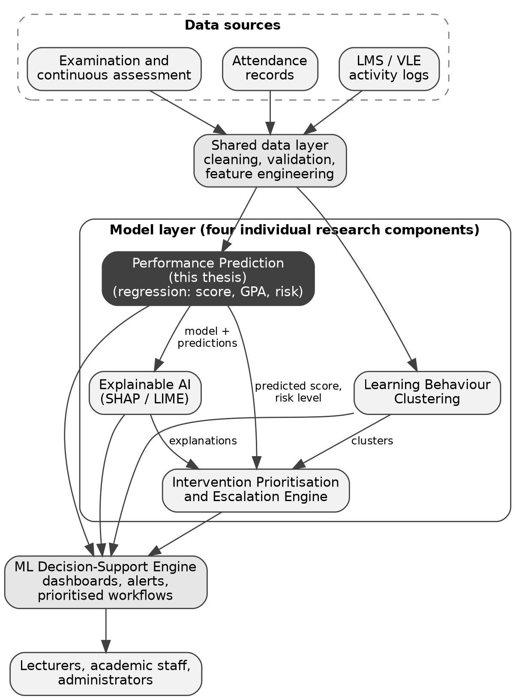
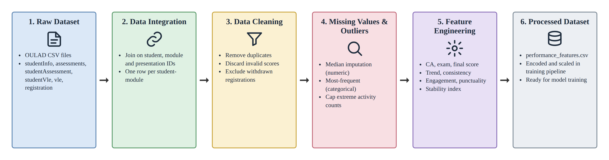

Predict
Regression models estimate a continuous final score, GPA, grade and risk level from multi-source data.
Research project R26-IT-141 · SLIIT Faculty of Computing
A machine learning based decision-support system that combines examination results, attendance and LMS activity to predict each student's academic performance, explain the reasons behind every prediction and turn them into prioritised academic support.
Regression models estimate a continuous final score, GPA, grade and risk level from multi-source data.
Behaviour clustering and explainable AI show which learning patterns and factors drive each prediction.
A policy-aware engine ranks students and assigns support actions, owners, follow-up dates and escalation paths.
The research background gathered through our literature survey, and how the proposed system addresses it.
Educational data mining and learning analytics use data from student records and learning platforms to understand learners and improve the environments in which they learn. Predicting academic performance is one of the most established tasks in both fields because it enables early, targeted support [1], [2].
Studies of LMS and virtual learning environment logs show that behavioural engagement, such as logins, resource use, forum activity and timely submission, predicts outcomes well before final assessments [3], [4].
Decision Trees, Random Forests, Gradient Boosting and neural networks are widely used to predict grades and pass/fail outcomes. Tree ensembles perform particularly well on tabular student data [5], [6].
Model-agnostic methods such as SHAP and LIME attribute each prediction to its input features, which is important for educator trust. Early-warning systems such as Course Signals showed that predictions are most valuable when they lead to timely intervention [7], [8].
Most existing systems analyse academic and behavioural data in isolation, limiting the accuracy and completeness of predictions.
Many prediction models offer little transparency about the factors behind a predicted outcome, which reduces educator trust.
LMS dashboards show logins and submissions but do not predict outcomes or identify at-risk students early.
Current solutions rarely define urgency, responsible staff, follow-up timing and escalation for each at-risk student.
Few systems are designed for the specific characteristics of Sri Lankan higher education, where traditional end-of-semester evaluation is still dominant.
How can academic, attendance and learning-behaviour data be combined to predict student performance accurately and early, explain the reasons behind each prediction, and convert those insights into prioritised academic support?
Sri Lankan institutions hold the data needed to anticipate academic difficulty, but they mainly rely on end-semester examinations and manual reviews. Students who are struggling are often identified only after the opportunity to help them has passed.
Main objective: Develop a machine learning based decision-support system that predicts student academic performance, identifies at-risk students early, explains prediction logic, and supports proactive academic response planning using data-driven and policy-aware insights.
Develop and evaluate regression models that predict student performance from integrated academic records and learning-behaviour indicators.
Design a policy-aware engine that ranks, assigns and schedules support workflows for at-risk students.
Integrate SHAP and LIME into the prediction models to improve transparency, interpretability and educator trust.
Identify hidden learning-behaviour patterns with unsupervised learning to support targeted academic planning.
The system follows a layered architecture: data gathering, data processing, model development, integration and visualisation. Academic results, attendance records and LMS activity logs are cleaned and transformed into engineered features, which feed four research components integrated through a central decision-support engine.


Assessments in the IT4010 Research Project module. Choose a milestone to see its details.
Documents produced during the project. View them online or download a copy; pending items appear here once they are submitted.
Slides used in our project presentations.
Final-year BSc (Hons) in Information Technology students at the Sri Lanka Institute of Information Technology.
Supervisor
supervisor@sliit.lkCo-supervisor
cosupervisor@sliit.lkIT22176356
Student performance prediction using multi-source regression models
it22176356@my.sliit.lkIT22137746
Policy-aware academic intervention prioritisation and escalation engine
it22137746@my.sliit.lkIT22540126
Explainable AI for educator trust in performance predictions
it22540126@my.sliit.lkIT22905390
Learning-behaviour clustering for adaptive academic planning
it22905390@my.sliit.lkQuestions about the project, collaboration or the dataset? Reach the team through any of these channels.